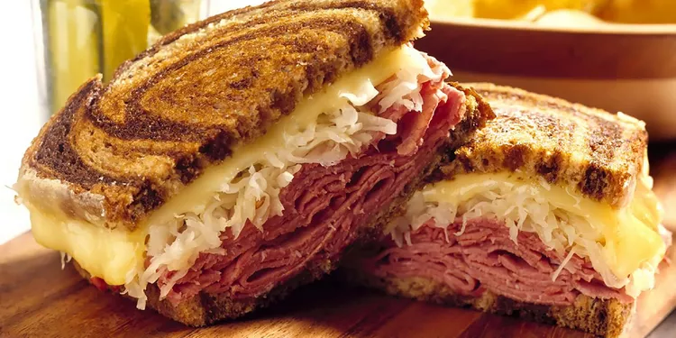

Reuben Sandwich

A Reuben sandwich is one of my family's fix-it-quick favorites. They are really delicious and easy to make. I like to serve them with big bowls of steaming vegetable soup and dill pickles on the side.
Ingredients
- 8 slices rye bread
- ½ cup Thousand Island dressing
- 8 slices Swiss cheese
- 8 slices deli sliced corned beef
- 1 cup sauerkraut, drained
- 2 tablespoons butter, softened
Steps:
- Gather all ingredients and preheat a large griddle or skillet over medium heat.
- Spread one side of bread slices evenly with Thousand Island dressing.
- On four bread slices, layer one slice Swiss cheese, 2 slices corned beef, 1/4 cup sauerkraut, and a second slice of Swiss cheese. Top with remaining bread slices, dressing-side down. Butter the top of each sandwich.
- Place sandwiches, butter-side down on the preheated griddle; butter the top of each sandwich with remaining butter. Grill until both sides are golden brown, about 5 minutes per side.
- Serve hot. Enjoy!